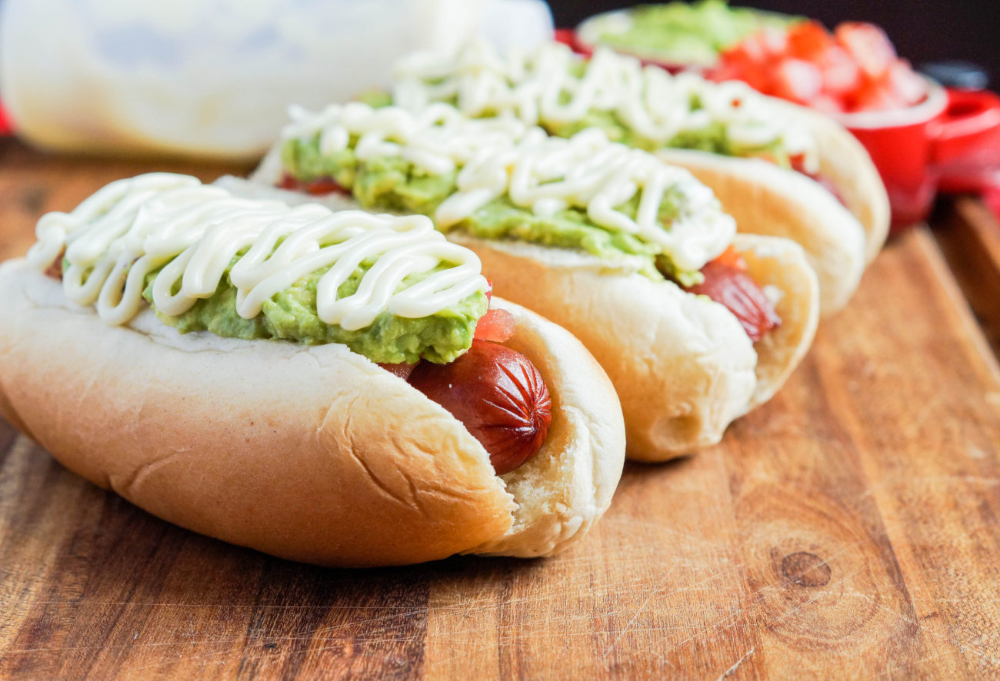

Completo Italiano
Chilean Italian-style Hot Doggo

Completo Italiano
Ingredients
- hot dog
- hot dog bun
- 1 tomato finely chopped
- salt to taste
- 1 large avocado
- 2 tbsp of mayo
Instructions
- Cook the hot dogs in a 350˚F oven or on a preheated
grill until heated through, 7-10 minutes.
- Place the cooked hot dogs in the buns and top with the
diced tomatoes. Sprinkle with a little salt if desired.
- Cut the avocados in half and discard the pits. Peel,
roughly chop, and transfer to a bowl. Mash with a fork
until smooth. Spread the mashed avocado over the tomato
covered hot dogs, then drizzle with mayonnaise.
- Serve immediately.
Home